Pythagoras's Identities
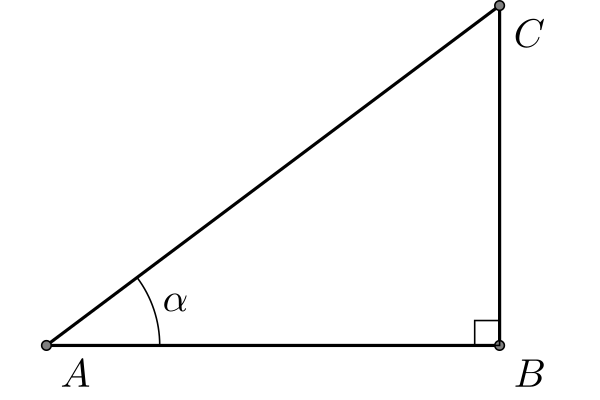
- \[\sin \alpha = \frac{BC}{AC},\, \cos\alpha = \frac{AB}{AC},\,\tan\alpha = \frac{BC}{AB}.\]
- \[ AB^2+BC^2 = AC^2.\]
- \[ \sin^2 \alpha+\cos^2\alpha = 1.\]
Sine Rule
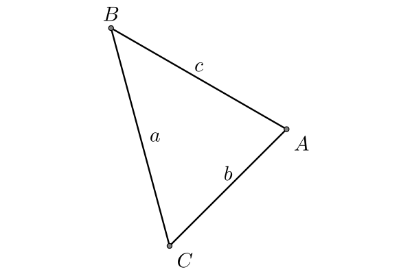
\[\frac{\sin A}{a} = \frac{\sin B}{b}= \frac{\sin C}{c}.\]
Cosine Rule
- \[a^2+b^2-2ab\cos A = c^2.\]
- \[b^2+c^2-2bc\cos A = a^2.\]
- \[c^2+a^2-2ca\cos A = b^2.\]
Angle Sum and Difference Identities
- \[\sin(\alpha\pm\beta) = \sin \alpha \cos \beta \pm \sin\beta\cos\alpha.\]
- \[\cos(\alpha\pm\beta) = \cos \alpha \cos \beta \mp \sin\alpha\sin\beta.\]
- \[\tan(\alpha\pm\beta) = \frac{\tan \alpha \pm \tan\beta}{1\mp \tan\alpha\tan\beta}.\]
Product-to-Sum and Sum-to-Product Identities
- Product to Sum
- \[2\cos \theta \cos \varphi ={\cos(\theta -\varphi )+\cos(\theta +\varphi )}.\]
- \[ 2\sin \theta \sin \varphi ={\cos(\theta -\varphi )-\cos(\theta +\varphi )}.\]
- \[2\sin \theta \cos \varphi ={\sin(\theta + \varphi )+\sin(\theta -\varphi )}.\]
- Sum to Product
- \[\sin \theta \pm \sin \varphi =2\sin \left({\frac {\theta \pm \varphi }{2}}\right)\cos \left({\frac {\theta \mp \varphi }{2}}\right).\]
- \[ \cos \theta +\cos \varphi =2\cos \left({\frac {\theta +\varphi }{2}}\right)\cos \left({\frac {\theta -\varphi }{2}}\right).\]
- \[\cos \theta -\cos \varphi =-2\sin \left({\frac {\theta +\varphi }{2}}\right)\sin \left({\frac {\theta -\varphi }{2}}\right).\]
Double-Angle and Half-Angle Formula
- Double Angle Formula
- \[\sin (2\theta) = 2 \sin\theta\cos\theta.\]
- \[\cos (2\theta) = \cos^2\theta-\sin^2\theta = 2\cos^2\theta-1 = 1-2\sin^2\theta.\]
- \[\tan (2\theta) = \frac{2\tan\theta}{1-\tan^2\theta}.\]
- Half Angle Formula
- \[\sin^2 \theta = \frac{1-\cos 2\theta}{2},\,\cos^2\theta = \frac{1+\cos 2\theta}{2}.\]
- \[\tan \theta = \frac{\sin 2\theta}{1+\cos 2\theta} = \frac{1-\cos 2\theta}{\sin 2\theta}.\]
Land Survey Problem
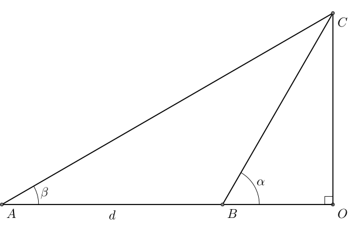
- \(CO = BO\times \tan \alpha\).
- \(CO = (BO+d)\times \tan \beta\).
- \[CO = d \frac{\tan \alpha\tan\beta}{\tan \alpha-\tan \beta}.\]
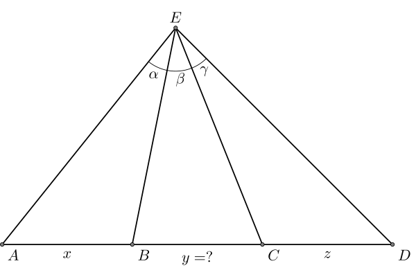
- In \(\triangle AEB\) and \(\triangle AEC\), \[\frac{EB}{\sin A} = \frac{x}{\sin\alpha},\,\frac{EC}{\sin A} = \frac{x+y}{\sin (\alpha+\beta)}.\]
- \[ EB/EC = \frac{x\sin(\alpha+\beta)}{(x+y)\sin \alpha}.\]
- Similarly \[EC/EB =\frac{ z \sin (\beta+\gamma)}{(z+y)\sin\gamma}.\]
- Therefore \[(y+x)(y+z)\sin\alpha\sin\gamma = xz \sin (\alpha+\beta)\sin(\beta+\gamma).\]
- How to solve \(EA\) and \(EC\)?
- In \(\triangle AEB\) and \(\triangle BEC\), \[\frac{EA}{x}\sin\alpha = \sin\angle EBA = \sin \angle EBC = \frac{EC}{y}\sin \beta.\]
- In \(\triangle EAC\), \[EA^2 + EC^2 - 2EA\times EC\cos (\alpha+\beta) = (x+y)^2.\]
Area
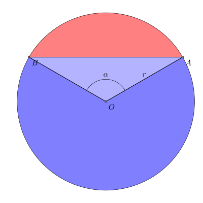
- The area of the large sector \(\pi r^2 \times (1-\alpha/2\pi)\).
- The area of the triangle \(r^2\sin \alpha/2\).
- The area of the whole blue area: \[\frac{1}{2} (2\pi-\alpha+\sin\alpha)r^2.\]
- The area of the red area: \[\frac{1}{2} (\alpha-\sin\alpha)r^2.\]
Sum of Sinusoidal Signals
- Suppose \(f\) is the sum of sinusoidal signals with the same frequency \[f(x)=\sum_{i} A_i \sin (\omega x + \theta_i).\]
- Expand each \(\sin (\omega x+\theta_i)\) term, then \(f(x)\) equals to \[\left( \sum_i A_i\cos\theta_i \right)\sin (\omega x) + \left( \sum_i A_i\sin\theta_i \right)\cos (\omega x)\]
- Suppose \(f(x) = A\sin (\omega x + \theta)\), then \[A\cos\theta = \sum_i A_i\cos \theta_i,\,A\sin \theta = \sum_i A_i\sin \theta_i.\]
Sum of Sinusoidal Signals
- \[A = \sqrt{\left( \sum_i A_i\cos \theta_i\right)^2+\left( \sum_i A_i\sin \theta_i\right)^2},\]
- If \( \sum_i A_i\cos \theta_i> 0\), then\[\theta = \tan^{-1}\frac{ \sum_i A_i\sin \theta_i}{ \sum_i A_i\cos \theta_i} . \]
- If \( \sum_i A_i\cos \theta_i< 0\), then\[\theta = \tan^{-1}\frac{ \sum_i A_i\sin \theta_i}{ \sum_i A_i\cos \theta_i} +\pi. \]
Definition of Conic Curves
Conic Sections
- A conic is the curve obtained as the intersection of a plane, called the cutting plane, with the surface of a double cone.
Directrix, Focus and Eccentricity
- A conic section is the locus of all points \(P\) whose distance to a fixed point \(F\) (called the focus) is a constant multiple (called the eccentricity, \(e\)) of the distance from \(P\) to a fixed line \(L\) (called the directrix of the conic).
- Suppose that the focus \(F\) is at \((0,0)\) and the line \(L\) is \(x = a\), then the polar form of the conic section is \[ r = \frac{ae}{1+e\cos\theta}\]
Directrix, Focus and Eccentricity
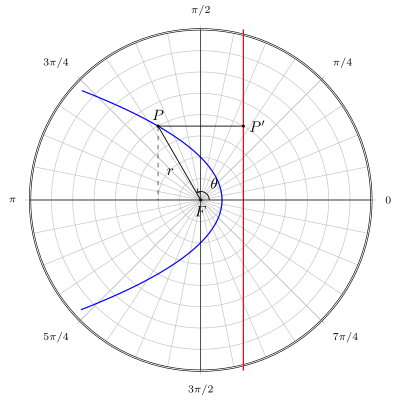
- For \(0 < e < 1\) we obtain an ellipse, for \(e = 1\) a parabola, and for \(e > 1\) a hyperbola.
- The circle will be the limit case where \(e = 0\).
Directrix, Focus and Eccentricity
Ellipse
- The standard form of a ellipse is \[\frac{x^2}{a^2}+\frac{y^2}{b^2}=1,\,a> b.\]
- The foci are at \((\pm c,0)\), where \(c = \sqrt{a^2-b^2}\).
- The eccentricity is \(e = c/a\) and the lines \(x = \pm a/e\) are the directrices.
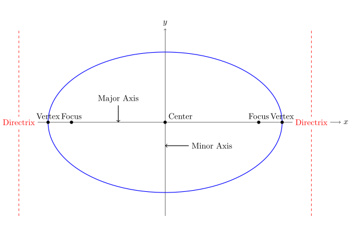
Parabola
- The standard form of a parabola is \[y^2 = 4ax,\,a > 0.\]
- The focus is at \((a,0)\)
- The line \(x = -a\) is the directrix.
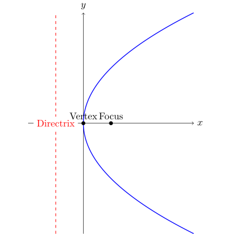
Hyperbola
- The standard form of a hyperbola is \[\frac{x^2}{a^2}-\frac{y^2}{b^2}=1.\]
- The foci are at \((\pm c,0)\), where \(c = \sqrt{a^2+b^2}\).
- The eccentricity is \(e = c/a\) and the lines \(x = \pm a/e\) are the directrices.
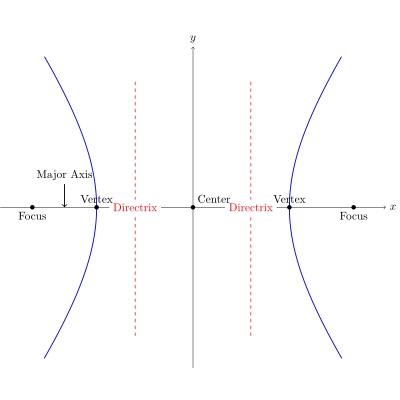
Translation of Coordinate
- Suppose a standard ellipse is moved \(x_0\) units to the right and \(y_0\) units to the left.
- Then the equation of the ellipse becomes \[\frac{(x-x_0)^2}{a^2}+\frac{(y-y_0)^2}{b^2}=1.\]
- The coordinate of the vertices, foci, center and directrices will shift.
- However, the distance between them remains constant.
- The same is true for hyperbola and parabola.
Translation and Rotation of Coordinate
- Consider a general quadratic equation \[Ax^2+Bxy+Cy^2+Dx+Ey+F = 0.\]
- This will represent a conic section that has been rotated and translated from the standard form.
- The following quantities remains constant, regardless of the movement:
- \(\Delta_1 = A+C\)
- \(\Delta_2 = AC-B^2/4\)
- \(\Delta_3 = ACF + BDE/4 − AE^ 2 /4− CD^2/4− FB^2/4\)
Translation and Rotation of Coordinate
- If the curve is non-degenerate, then \(\Delta_3\neq 0\).
- If \(\Delta_2 \neq 0\), then we assume that the quadratic equation can be rewritten as either an ellipse or hyperbola \[A'(x')^2 + C' (y')^2 + F' = 0.\]
- By invariance, we have the following equations:
- \(A'+C' = A+C\)
- \(A'C' = AC-B^2/4\)
- \(A'C'F' = ACF + BDE/4 − AE^ 2 /4− CD^2/4− FB^2/4\)
Translation and Rotation of Coordinate
- If \(\Delta_2 = 0\), then we assume the quadratic equation can be rewritten as a parabola \[C'(y')^2 + D'x' = 0.\]
- By invariance, we have the following equations:
- \(C' = A+C\)
- \(-C'(D')^2/4 = ACF + BDE/4 − AE^ 2 /4− CD^2/4− FB^2/4\)
Distances to the Foci
- The ellipse is the set of all points such that the sum of the distances from two fixed points (foci) is constant (\(2a\)).
- A hyperbola is the set of all points such that the difference of the distances from two fixed points (foci) is constant (\(2a\)).
Parabola
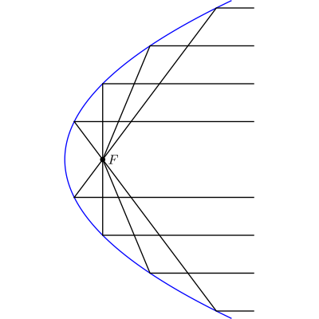
- If the light source is located at the focus of a parabola, the light will be reflected in lines parallel to the parabola's axis.
- If a light beam is parallel to the parabola's axis, it will be reflected to the focus point of the parabola.
Ellipse
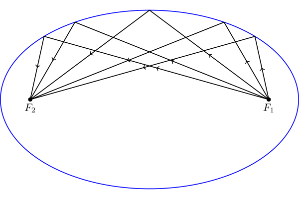
If the light source is placed at one of the two focal points of an ellipse, the light will be reflected to the other focal point.
Hyperbola
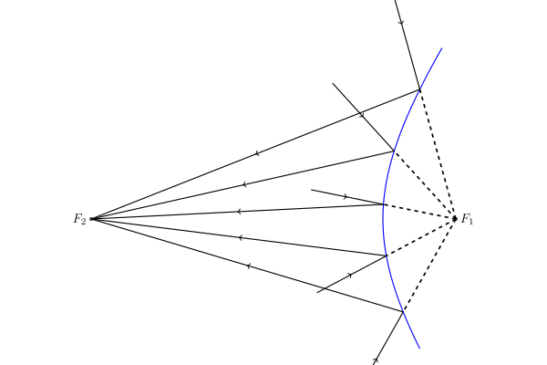
If the light beam is pointing at one of the two focal points of an hyperbola, the light will be reflected to point at the other focal point.
Telescope Design
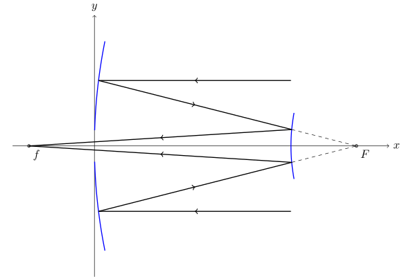
- The parabola gathers all the incoming parallel light to its focus \(F\).
- The hyperbola reflects the light pointing at \(F\) to point it at \(f\). Hence, \(F\) and \(f\) are the two foci of the hyperbola.
Quadratic Bezier Curve
- Parametric Form: \[R(t) = (1-t)^2 P_0 + 2t(1-t)P_1 + t^2 P_2.\]
- The derivative of \(R(t)\) is \[\frac{dR(t)}{dt} = 2(1-t)(P_1-P_0)+2t(P_2-P_1).\]
Quadratic Bezier Curve
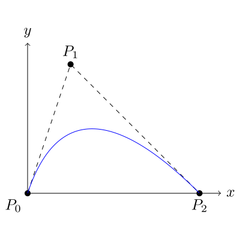
Important properties:
- The curve starts at \(P_0\) and ends at \(P_2\).
- The curve points towards \(P_1\) at the beginning and points away from \(P_1\) at the end.
Trajectory of a Projectile
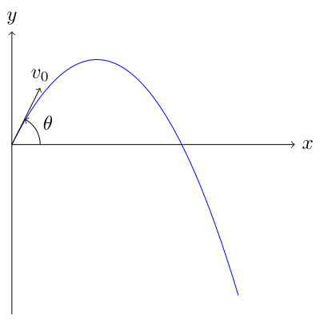
- At time \(t\), the position of the projectile \[x(t) = v_0\cos\theta t,\,y(t) = v_0\sin\theta t - \frac{1}{2}gt^2. \]
- Eliminating \(t\), we can get the parabola \[y = \tan \theta x - \frac{g}{2v_0^2\cos^2\theta}x^2.\]
Vertical Range
- For a given angle \(\theta\), since \(y(t) = v_0\sin \theta t - \frac{1}{2}gt^2\), the maximum height is achieved at the following time \(t_* = v_0\sin \theta/g.\)
- The corresponding height is \[y(t_*) = \frac{v_0^2\sin^2\theta}{2g}.\]
- To achieve maximum height among all possible angles, we should aim \(v_0\) upward, i.e., \(\theta = 90^\circ\). This gives a maximum height of \[h_* = \frac{v_0^2}{2g}.\]
Horizontal Range
- For a given angle \(\theta\), the trajectory of the projectile follows the following parabola:
\[y = \tan \theta x - \frac{g}{2v_0^2\cos^2\theta}x^2 = x \left(\tan \theta - \frac{g}{2v_0^2\cos^2\theta}x\right).\]
- Therefore, the horizontal range of the projectile is \[d = \frac{2v_0^2\cos^2\theta\tan\theta}{g} = \frac{v_0^2}{g}\sin 2\theta.\]
- The maximum horizontal distance is achieved when \(\theta = 45^\circ\), and \[d_* = \frac{v_0^2}{g}.\]
Paper strip method
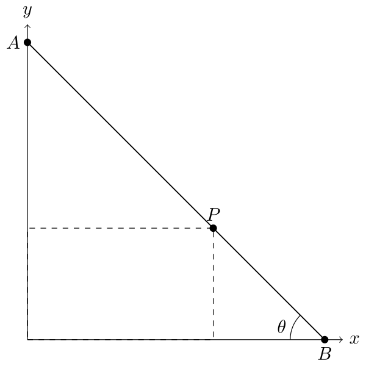
- We start with a strip of paper of length \(a+b\).
- Find point \(P\) on the strip such that \(AP = a\) and \(PB = b\).
- Move the strip such that \(A\) is on the \(y\)-axis and \(B\) is on the \(x\)-axis.
Paper strip method
- Suppose the angle of the strip is \(\theta\), then \(P\) has a parametric representation: \[P = (a\cos\theta,b\sin\theta).\]
- Therefore \(P\) is on the ellipse \[\frac{x^2}{a^2}+\frac{y^2}{b^2}=1.\]
Multilateration
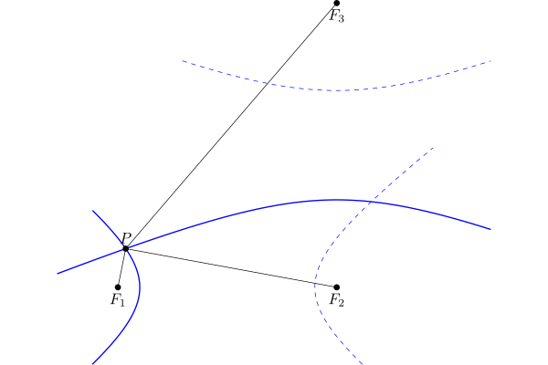
Suppose we have 3 base station \(F_1, F_2\) and \(F_3\), which transmit a signal at the same time.
Multilateration
- If we receive the signals from \(F_1\), \(F_2\) and \(F_3\) at time \(t_1 < t_2 < t_3\), we know that \[PF_2 - PF_1 = (t_2-t_1)v,\,PF_3 - PF_2 = (t_3 -t_2)v,\] where \(P\) is our position and \(v\) is the speed of the signal.
- Therefore, \(P\) is on two hyperbola.
- Special case, if \(t_i = t_j\), then \(P\) is on the perpendicular bisector of \(P_i\) and \(P_j\).
Distance to the Horizon
- A man is standing on a \(h=30m\) building at point \(P\).
- Assume the Earth is a perfect sphere with radius \(R=6371km\).
- Draw the tangent line from \(P\) to the circle.
- \(OP = R + h\), \(OQ = R\), and \(\angle OQP = 90^\circ\).
- \(QP = \sqrt{(R+h)^2 - R^2} = \sqrt{2Rh+h^2}\approx \sqrt{2Rh} = 19.55km\).
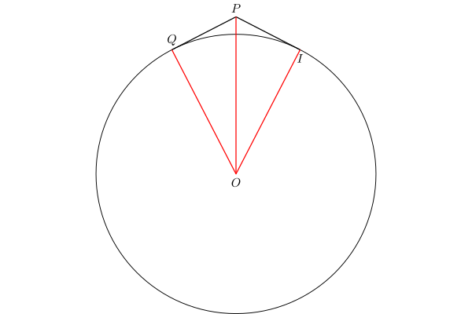
Distance to the Horizon
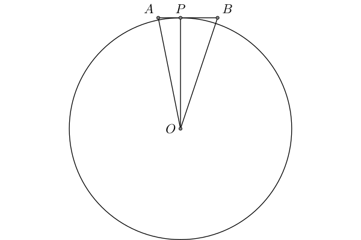
- Person A stands \(h_1\) meters above the sea level.
- Person B stands \(h_2\) meters above the sea level.
- They can see each other if and only if the distance between them \[d \leq \sqrt{2Rh_1}+\sqrt{2Rh_2}.\]
Stellar Parallax
- Parallax is a displacement or difference in the apparent position of an object viewed along two different lines of sight.
- We can use parallax to determine distance.
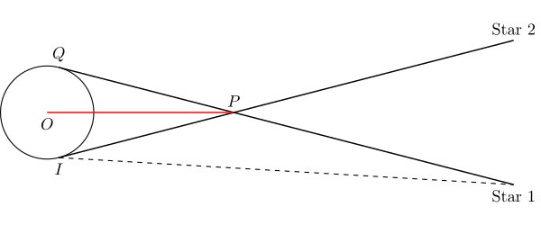
Stellar Parallax
- Half of the angle \(\angle QPI\) is called parallax angle \(p\).
- When \(Q\) and \(I\) are on the opposite side of Earth, the parallax angle is maximized
- The distance can be computed as \[\frac{r}{\sin\angle QPO}\approx \frac{r}{\angle QPI/2}.\]
- However, If \(Q\) and \(I\) are not on the exact opposite side, then the distance is not \(2r/p\).
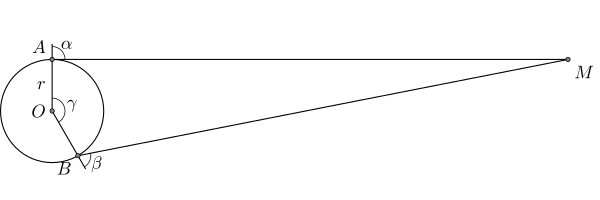
Standard Candle
- Apparent magnitude \(m\) is the magnitude of the star measured from Earth.
- Absolute magnitude \(M\) is the magnitude of the star measured at \(10\) parsecs away from the star.
- \[m - M = 5(\log_{10} d-1).\]
- \(d\) can be solved from \(m\) and \(M\). (The unit is parsec)
Kepler's Law of Planetary Motion
- First Law: The orbit of a planet is an ellipse with the Sun at one of the two foci.
- Second Law: A line segment joining a planet and the Sun sweeps out equal areas during equal intervals of time.
- Third Law: The square of the orbital period of a planet is proportional to the cube of the semi-major axis of its orbit.
Extension
- For comet, the trajectory could be a parabola or hyperbola with Sun at the focus. The second law still holds.
- Kepler's law can also be applied to satellite orbiting the Earth or the moons orbiting other planet.
The Second Law of Planetary Motion
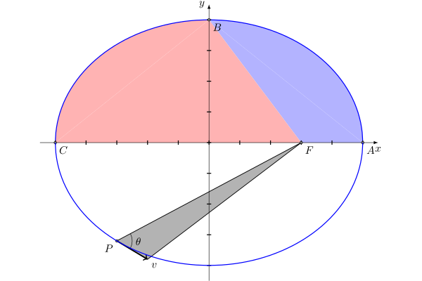
Suppose the period of the planet is \(T\) and the trajectory is given be \[\frac{x^2}{a^2}+\frac{y^2}{b^2} = 1.\]
The Second Law of Planetary Motion
- The blue sector has an area of \[\pi ab/4-bc/2.\]
- From Kelper's Second Law, the time to go from \(A\) to \(B\) is \[t = \frac{\text{blue area}}{\pi ab} T = \left(\frac{1}{4} - \frac{c}{2\pi a}\right)T.\]
- Similarly, the time to go from \(B\) to \(C\) is \[t = \frac{\text{red area}}{\pi ab} T = \left(\frac{1}{4} + \frac{c}{2\pi a}\right)T.\]
The Second Law of Planetary Motion
- Suppose that point \(P=(x_0,y_0)\), the speed of the planet is \(v\). Then from the second law, we have \[\frac{0.5 vt\times PF\sin\theta}{t} = \frac{\pi ab}{T}\Rightarrow v = \frac{2\pi ab}{T \sin\theta \sqrt{(x_0-c)^2+y_0^2}}. \]
- Notice that \(v\) is along the direction of the tangent line, which is given by \[\frac{x_0}{a^2}x + \frac{y_0}{b^2}y = 1.\]